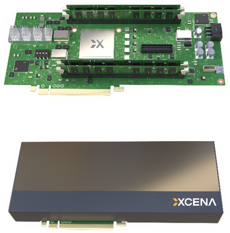

Should database work move into CXL memory? When does it pay off, how much does it gain, and at what cost once preparation, launch and handoff are counted?
Data residency alone does not decide the plan. A device plan must also launch work, translate addresses through the device's own structures, and deliver a usable result to the next stage. On this CXL 2.0 link there is no hardware back-invalidation, so the software work that makes device updates visible is part of every measurement.
Plans are compared as pipeline fragments, operators finished at a defined result boundary, under a common execution contract that fixes the input, the result and what must be visible at completion.
- A real-silicon characterization of orchestration, translation, explicit-transfer and coherency costs, including how they depend on runtime state and the handoff protocol.
- Operator and composite-workload experiments showing how result return, probe preparation and mutable-state handoffs change placement rankings.
- An evaluation contract and placement guidance that charge preparation and visibility work and state the conditions under which an observed speedup applies.
| Work | What it studies |
|---|---|
| CXL memory characterization | |
| Melody | CXL memory performance at scale; host stalls traced to CXL data-path latency |
| SupMario | analysis, modeling and optimization of CXL memory performance |
| CXL-Bench | CXL for in-memory data processing, from microbenchmarks to scans, B+-trees and TPC-H; where data should live |
| Computational CXL | |
| M²NDP | low-overhead kernel launch and device-side address translation |
| UDON | general-purpose offloading to compute on CXL memory |
| AXLE | coordinated offloading with asynchronous result streaming |
| PIM benchmarking and substrate comparisons | |
| PrIM | microbenchmarks and applications, including host–PIM communication |
| PIM or CXL-PIM? | explicit staging vs. unified-address access |
| CANDLE | where database computation should run on real computational CXL silicon, with all four taxes and contract-complete timing |
- Real silicon Measurements of an implemented computational CXL device and its runtime, complementing simulation and NUMA-emulation studies.
- Computation placement Passive-expander studies decide where data lives and face only data movement; a computational expander adds orchestration, translation and coherency.
- Open artifact Harness, kernels, configurations, raw measurements and plotting scripts, with the commands for each figure and table.
One MX1P (PXL SDK 2.0.0, firmware 1.0.4) on one host. Several expanders, CXL switches and memory shared across hosts are not covered; the rules carry over, the crossover points are this platform’s.
CXL 2.0 over PCIe 5.0 ×8 at 32 GT/s, below the device’s supported rate. Bandwidth-bound results would shift with a faster link.
No hardware back-invalidation in this configuration, so the coherency costs describe the software handoff path.
The workloads are memory-bound database operators. Compute per byte was not varied, so compute-heavy kernels on the MU cores are not characterized.
Covered in depth by prior work (Melody, SupMario, CXL-Bench). CANDLE uses Host@CXL as its baseline rather than profiling it.
CANDLE compares pipeline fragments, operators finished at a defined result boundary, not complete query plans.

Moving data between host and devices is a growing bottleneck, and memory is one of the most expensive yet least utilized parts of a server. CXL lets a server add memory beyond its DIMM slots. XCENA's computational memory goes one step further: a CXL Type 3 memory expander (CXL.io + CXL.mem) with its own CXL controller and thousands of cores placed next to its DDR5 DRAM. The aim is to move less data and use fewer host CPUs.
- Write a compute kernel in MU code.
- Write a host application using the PXL APIs.
- Build both components.
- Run on the hardware or the emulator.
memAllocmap device memory
load kernelMU binary
dispatch handlePXL Map
stage inputswrite + flush, or NT + sfence
execute()descriptor + doorbell
synchronize()completion
read resultsinvalidate, then read
Mappxl::flushHostCache writes back or invalidates host lines; mu::flushCache and mu::flushCacheAll are the device-side calls. Explicit copies use copyToDevice / copyFromDevice (DMA).- CPU
- 2 × Intel Xeon 6756E (Sierra Forest-SP), 256 cores, 128 per socket
- Cache
- 96 MiB L3 per socket
- Memory
- 256 GB DDR5-6400 per socket, 4 channels populated
- Bandwidth
- 204.8 GB/s theoretical, ~178 GB/s measured
- OS
- Ubuntu 24.04.4 LTS, Linux 6.8.0-41
- Cores
- 3,072 RISC-V MUs at 1.4 GHz: 24 Subs × 4 clusters × 32
- Caches
- 4 KiB L1 per core, 256 KiB L2 per cluster, 128 MiB shared L3
- Memory
- 233 GiB, four DDR5-8400 modules
- Control
- dual-core Arm Cortex-A53 management processor
- Drivers
cxl_pci,mx_dma
memAlloc; host and device plans access the same input allocation.mbind assigns each 2 MB input chunk to host node 0 or device node 2 at the requested ratio.- Pp
- preparation and finalization not covered by the other terms
- Up,s
- computation and ordinary memory accesses in stage s, including host loads from CXL and the translation cost τ
- αp,ℓ
- orchestration of launch ℓ: admission, dispatch, completion
- βp,x
- explicit transfer x between host and device memory
- γp,h
- coherency work at handoff h: writeback, invalidation, ordering
A dispatch is control and completion, not device work: only 13.3 µs of a ~1.2 ms fresh dispatch runs on the device, and a reused handle gets slower until it is rebuilt.
| Control path | Total | Per fragment |
|---|
Cost follows the 1 GB granules an access stream touches, not the bytes allocated, and only accesses that miss the data cache pay it.
DMA pays a fixed ~25 µs per call; direct copies avoid it but hit a ceiling. NT stores win host-to-device up to 16 MiB; the return path switches to DMA at 64–128 KiB.
Hand off at kernel boundaries, where the host's flush or invalidate is enough. Inside a running kernel, only flushCacheAll keeps data ahead of its counter.
sfence0 stalemu::flushCacheAll; write device-bound data with NT stores, no flush.lineitem · 9.0 B rows · 2 columnsCounting: Host@CXL is link-bound at 3.1 s; NDP-sync is 3.8× faster and breaks even with a host that holds only ~25–30% of its input on CXL.
Materializing: results must be written and returned, so the gain drops to 2.2× even with return pipelined over 32 launches.
orders.o_orderkey · 2.25 B keys · 64 B nodes · 11 levelsWith probes already partitioned, NDP-sync is 2.3× faster than Host@CXL. Charging the partitioning step reverses that against a host that keeps the inner levels in DRAM.
orders ⋈ 600 M lineitem · 4 GiB hash table, 43× the LLCBuild favors the host, probe favors the device; Hybrid combines them, but its handoffs eat most of the probe saving.
Splitting reads and updates across sites costs more in coherency than it saves; keeping both on one site wins.
mbind per chunk, checked with move_pages; host threads pinned to the device-local socket.rdtsc/rdtscp in Tier 1, std::chrono around phases in Tiers 2–3; vendor profiler off while timing; warm-up first; median of three runs (five iterations per process for the join).null_kernel: an empty body between profiler probes. Variants take 3 scalars, 1–6 pointers or an NDArray.execute() → synchronize() returns. 20 warm-up and 200 timed dispatches per point.for (int i = 0; i < reps; i++) { if (g_fresh && renew) renew(map); // FRESH=1: new handle, outside the timed region uint64_t t0 = timing::start(); // lfence; rdtsc sink = chk(map->execute(dummy)); chk(map->synchronize()); uint64_t t1 = stop_fn(); // rdtscp; lfence r.wall_us.push_back(timing::to_us(t1 - t0, ghz)); }
void null_kernel(int dummy) { // no arithmetic, no memory access mu::profilerStart("null_kernel"); (void)dummy; mu::profilerEnd("null_kernel"); }
main.cppmain_profiler.cppmu_kernel/mu_null.cppscripts/fresh_sweep.shtt_access: random dependent reads over K target lines in R regions S bytes apart. One MU task, no index arrays.std::uint64_t s = cfg->seed, warm = 0; // warm-up: the identical access sequence for (std::uint64_t a = 0; a < n; ++a) warm += load(buf + tt::offset_of(p, tt::pick_random(p, s))); s = cfg->seed; // timed pass: same sequence again std::uint64_t sum = 0, cycles = 0; std::uint32_t last = mu::getClockCycle(); for (std::uint64_t a = 0; a < n; ++a) { sum += load(buf + tt::offset_of(p, tt::pick_random(p, s))); if ((a & (kClockChunk - 1)) == kClockChunk - 1) { // every 4,096 accesses std::uint32_t now = mu::getClockCycle(); // 32-bit, wrap-safe deltas cycles += now - last; last = now; } } cfg->cycles = cycles; cfg->sum = sum; // checked against a host replay mu::flushCacheAll(); // publish the results
main.cpptt_common.hppmu_kernel/tt_kernel.cppscripts/run_tlb.shcopyToDevice / copyFromDevice; direct memcpy, 8-byte loop or AVX2 NT stores, with and without flush.run("copyToDevice", "H2D", n, samples, true, [&] { // DMA sink = chkr(ctx->copyToDevice(devCxl, host, n)); }); run("direct_memcpy", "H2D", n, samples, false, [&] { // copy + required flush std::memcpy(devCxl, host, n); pxl::flushHostCache(devCxl, n); }); run("direct_ntstore_noflush", "H2D", n, samples, false, [&] { nt_store_copy(devCxl, host, n); // NT stores + sfence, no flush });
for (size_t i = 0; i < body; i += 32) { __m256i v = _mm256_loadu_si256((const __m256i*)(s + i)); _mm256_stream_si256((__m256i*)(d + i), v); // bypasses the host cache } if (cached) _mm_mfence(); else _mm_sfence(); // aligned sizes: NT stores + sfence only
main.cppscripts/run_pinned_sweep.shscripts/diag_dma_floor.shfigures/make_data.pyk_fill, k_check, k_publish; no DMA anywhere.rdtsc; host cache prepared dirty, clean or absent.for (uint64_t c = 0; c < C; ++c) { const uint64_t base = pub_data(P, C, L, t, c); for (uint64_t i = 0; i < L * 8; ++i) buf[base + i] = pat(base + i, salt); if (mode != PUB_NOFLUSH) mu::flushCache(&buf[base], L * 64); // posted: may not finish first if (mode == PUB_FLUSHALL || mode == PUB_FLUSHALL_NOFENCE) mu::flushCacheAll(); // the fix: 0 poisoned lines if (mode == PUB_FLUSH_FENCE || mode == PUB_FLUSHALL) asm volatile("fence rw, rw" ::: "memory"); *ctr = c + 1; // publish this chunk mu::flushCache((const void*)ctr, 64); }
main.cppcoh_common.hppmu_kernel/coh_kernel.cppscripts/run_suite.shseqsfence betweenseq lands lastflushCache → readflushCacheAll → atomicAddclflushopt + mfence → readsetBatchSize(1) and execute(ctrl, tasks); a host NT store of stop = 1 ends it.void drain_bench(long* q) { if (mu::getTaskIdx() != 0) return; // one MU thread drains the queue long target = ld(q, TARGET), hbatch = ld(q, HBATCH); for (;;) { flushCache(&q[T], 8); if (ld(q, T) > 0) break; } // wait for the host's tail long head = 0, sink = 0; while (head < target) { sink += ld(q, TASKS + head); // dequeue one descriptor, read fresh head++; if ((head % hbatch) == 0) { st(q, H, head); st(q, PROC, head); } // progress, amortized } st(q, SINKF, sink); // checksum: every task was read st(q, DONE, 1); // st(): store + flushCache mu::flushCacheAll(); }
// bulk: N stores, one flush for the whole range for (long i = 0; i < N; i++) vst(TASKS + i, 1); // payload 1: checksum == N vst(T, N); pxl::flushHostCache(q, sizeof(long) * slots); // one at a time: store + flush per item for (long i = 0; i < M; i++) { hwrite(TASKS + i, 2); hwrite(TASKS + i, 1); } auto* map = job->buildMap(func, 1); map->execute(q); // launched once map->synchronize(); // returns when all N are drained
cxl_resident_worker, code under Tier 3 below); the hash join's cxl_resident_probe_kernel uses the same protocol with a row range and a result block in the control line. Code shows the Tier 1 benchmark behind the dequeue and publish costs.scan_filter: one contiguous slice per MU task; l_orderkey is read only for matching rows. Host threads run the same loop.execute() → synchronize(), upload outside the timer. With return: first launch → last key in host DRAM.mbind placement; device 256–3,048 tasks; three runs per point.inline SliceResult scan_slice_out(const std::uint8_t* qty, const Key* keys, Out* dst, std::uint64_t lo, std::uint64_t hi, std::uint32_t threshold, Key base) { SliceResult r{0, 0, 0}; for (std::uint64_t i = lo; i < hi; ++i) { if (qty[i] > threshold) continue; // branchy on purpose, like the join's probe const Key key = keys[i]; // key read only for matching rows if (dst) dst[r.n] = static_cast<Out>(key - base); // 4-byte offset from the slice's base key ++r.n; r.sum_idx += i; r.sum_key += key; } return r; }
--return chunked, 32 launchesfor (std::uint64_t st = 0; st < o.ret_steps && kok; ++st) { kok = map_step->execute(/* ... */, (st << 32) | o.ret_steps) == pxl::PxlResult::Success && map_step->synchronize() == pxl::PxlResult::Success; // kernel ends with flushCacheAll pxl::flushHostCache(d_prog, stat_bytes); // invalidate, then read the task cursors for (std::uint64_t t = 0; t < o.par; ++t) // readers copy keys below this snapshot only __atomic_store_n(&avail[t * stride], d_prog[t * stride], __ATOMIC_RELEASE); }
main.cppscan_common.hppmu_kernel/scan_filter_kernel.cppscripts/run_scan.shscripts/return_ab.shtier2/btree: each task walks its probe range; 64 B nodes with implicit children, one line per level.execute() → synchronize(). Partitioning (counting sort, 64 threads) timed and reported separately.for (std::uint64_t i = lo; i < hi; ++i) { const Key k = q[i]; std::uint64_t cur = c.root; for (std::uint64_t h = c.height - 1; h > 0; --h) { // one 64 B line per level const Key* keys = reinterpret_cast<const Key*>(nodes + cur * 64); std::uint64_t slot = 0; for (int j = 1; j < 8; ++j) slot += keys[j] <= k; // branch-free child choice cur = c.level_off[h - 1] + kCompactFan * (cur - c.level_off[h]) + slot; } const Key* lk = reinterpret_cast<const Key*>(nodes + cur * 64); Val v = 0; for (int j = 0; j < 4; ++j) if (lk[j] == k) v = lk[4 + j]; if (v) { ++r.n; r.sum_idx += i; r.sum_val += v; } // count and sum, no result vector }
main.cppbtree_common.hppmu_kernel/btree_kernel.cppscripts/run_btree.shscripts/ablation.shcxl_partition_kernel + cxl_owner_build_kernel (device build); cxl_resident_probe_kernel (probe, 32 keys prefetched)._pure_build_end_time = std::chrono::high_resolution_clock::now(); #if defined(MODE_CXL_HYBRID) // write back the host-built table before the device probes (coherency, timed as a handoff) parallel_flush({{_cxl_table_arena.get(), _table_stride * count_partitions}}); pxl_helper::safeFlushHostCache(_cxl_ht_ptrs_mem.get(), count_partitions * sizeof(std::uintptr_t)); pxl_helper::safeFlushHostCache(_cxl_config.get(), sizeof(CxlHashJoinConfig)); #endif _build_end_time = std::chrono::high_resolution_clock::now();
pxl_helper::safeFlushHostCache(_cxl_match_counts.get(), /* counts */); for (std::uint32_t t = 0; t < device_tasks; ++t) { // only the newly written result range const std::uint64_t n = _cxl_match_counts.get()[t * result_stride]; if (n > handed_off[t]) { ranges.emplace_back(/* task t's new tuples */); handed_off[t] = n; } } if (bytes < (std::size_t{4} << 20)) { for (auto& [ptr, len] : ranges) pxl::flushHostCache(ptr, len); _mm_sfence(); } else parallel_flush(ranges); // large: split across host workers
main.cppbenchmark.cppmu_kernel/cxl_build_kernel.cppmu_kernel/cxl_probe_kernel.cppscripts/run_devdax_modes.shcxl_resident_worker (NDP@CXL) or per-batch lookup and write kernels (NDP-sync); latch-free, one writer task per leaf; splits fall back to the host.// Drop every leaf the host just read before the device writes. Without this, host copies of // tree lines were later written back over the device's updates (10 of 24 soak runs lost data). parallel_for_workers(st.size(), thread_id, [&](std::size_t b, std::size_t e) { for (std::size_t j = b; j < e; ++j) if (st[j].leaf) // mark each visited leaf once bits[i >> 6].fetch_or(1ULL << (i & 63), std::memory_order_relaxed); }); parallel_for_workers(nwords, thread_id, [&](std::size_t b, std::size_t e) { for (std::size_t w = b; w < e; ++w) for (std::uint64_t m = bits[w]; m; m &= m - 1) // then flush each marked leaf cxl_inval_cache_range(leaf_at(w, __builtin_ctzll(m)), kNode); });
void cxl_resident_worker(std::uint64_t* ctrl, int numTasks) { volatile std::uint64_t* c = ctrl; std::uint64_t last = 0; for (;;) { mu::flushCache(ctrl, 64); // drop the cached ctrl line, re-read memory if (c[4]) break; // stop flag const std::uint64_t seq = c[0]; if (seq == last) { /* back off */ continue; } last = seq; if (c[1] == 1) lookup_batch_impl(root, reqs, bytes, true); // true: flushCache else write_batch_impl(root, reqs, bytes, true); // each request line read mu::flushCacheAll(); // results in memory before the done signal mu::atomicAdd(reinterpret_cast<std::int32_t*>(ctrl + 8), 1); } mu::flushCacheAll(); }
void run(std::uint64_t kind, CXLNode* root, void* reqs, std::size_t n) { nt(c + 1, kind); nt(c + 2, (std::uint64_t)reqs); nt(c + 3, n); nt(c + 5, (std::uint64_t)root); _mm_sfence(); // job fields first ... nt(c + 0, ++seq); // ... then the sequence number _mm_sfence(); const std::int64_t target = tasks * seq; // every task adds 1 per job while (done() < target) _mm_pause(); // done(): _mm_clflushopt + _mm_mfence + read }
main.cppblink_tree_cxl_batch.hblink_tree_scheduler_task.hmu_kernel/cxl_kernel.cppscripts/bench_fig_row.shscripts/soak_hybrid.shtier<N>/<component>/ ├─ README.md what it measures, paper figures ├─ build.sh host driver + MU kernel ├─ run.sh the paper's runs → results/ ├─ smoke.sh small validated run → PASS / FAIL ├─ scripts/ the underlying sweeps ├─ results/ raw runs behind the figures └─ figures/ make_data.py · render.sh · fig_*.gp
./candle.sh listthe components./candle.sh build allas your usersudo ./candle.sh smoke allPASS / FAIL per component./candle.sh run <component>the paper's runs./candle.sh figures allresults → data → .eps
tier1/coherence) or its last part (coherence).dbgen output in $DATA_ROOT/sf_<SF>/: SF 1–100 tables for the hash join, SF 1500 scan columns from tier2/scan/tools/gen_cols.sh. The B+-tree and B-link tree generate their own keys.sudo daxctl reconfigure-device --mode=devdax --force dax0.0sudo systemctl restart pxl_resourcedsudo xcena_cli num-device→ 1
sudo daxctl reconfigure-device --mode=system-ram dax0.0- device memory appears as NUMA node 2
pxl_resourced · run as root wherever the host loads or stores device memory · keep one PXL process on the device · check the device with the canary tier1/data_movement/main d1 --verify-only before and after.- the host drivers and MU kernels build and launch
- every validation passes: checksums, reference joins, the golden B-link tree
- the visibility protocol is followed end to end
- timings, bandwidths and crossovers: emulated numbers do not reflect the device
- translation, cache and link behaviour of the MX1P
rdtscp the timing code falls back to lfence + rdtsc automatically.--no-kvm~25 GB disk per container48 GiB RAM for the guestno CXL hardware or drivers- Check KVM on the host
ls -l /dev/kvmkvm-okkvm-okcomes with Ubuntu'scpu-checker. Without KVM everything still works, only slower. - Start the SDK container
docker run -it --name xcena_sdk --device=/dev/kvm --cap-add=SYS_ADMIN -e USER="$USER" xcenadev/sdk:<tag> /bin/bashUse the tag of your SDK release (the paper used PXL SDK 2.0.0). Without KVM, leave out--device=/dev/kvm. - Boot the emulated machine
cd /work/emulator && ./run.shAdd--no-kvmwithout KVM. The first boot can stay silent for minutes while the ~25 GB guest disk is copied; the guest logs in asxcena. - Wait for device setup
until systemctl is-active --quiet xcena_init.service && test -f /opt/xcena/init_done; do sleep 2; doneIn the guest. If it fails:systemctl status xcena_init.service. - Check the virtual device
xcena_cli num-deviceExpectNumber of devices : 1. - Build and validate CANDLE
git clone https://github.com/anon-user-sys/CANDLE→./candle.sh build all→./candle.sh smoke allInside the guest, with small inputs. A run passes when its validation does; ignore the timings.
docker run terminal stops the emulator; detach with Ctrl-P, Ctrl-Q.docker start -ai xcena_sdk or docker exec -it xcena_sdk /bin/bash.| Paper | Directory | Command | Session |
|---|---|---|---|
| Tier 1 · Taxes | |||
| Fig. 3 · Table 2 | tier1/orchestration/ | ./run.sh | devdax |
| Fig. 4 · §4.1.4 | tier1/resident_worker/ | sudo ./run.sh | devdax, root |
| Fig. 5 | tier1/translation/ | ./run.sh | devdax |
| Fig. 6 · Table 3 | tier1/data_movement/ | sudo ./run.sh | devdax, root |
| Fig. 7 · Table 4 | tier1/coherence/ | sudo ./run.sh | devdax, root |
| Tier 2 · DB operations | |||
| Fig. 8 · Table 5 | tier2/scan/ | sudo ./run.sh | both |
| Fig. 9 · Fig. 10 | tier2/btree/ | ./run.sh | both |
| Tier 3 · Composite workloads | |||
| Fig. 11 · Fig. 12 | tier3/hash_join/ | sudo ./run.sh | devdax, root |
| Fig. 13 · §6.2 | tier3/blink_tree/ | sudo ./run.sh | devdax, root |